14日目～夢のジャングルトレッキング～
僕たちがインドネシアに来た第一の目的はインドネシアでのジャングルトレッキングだ。今日はその目的が果たされる日である。本当はレンタカーの旅のはずだったので往路は主にバリサン山脈にそってスマトラの西側を走り、復路はプカンバルやジャンビ、パレンバン等のスマトラ東部に広がる大平原地帯を走るはずだったのだが、数々のトラブルに見舞われてそれは不可能になってしまったのでパダンからは飛行機でジャカルタへと戻ることになったのである。トラブルに見舞われて、旅の予定を変更しなければならなくなったとき、一番優先したのがここ、ブキティンギでのジャングルトレッキングだった。
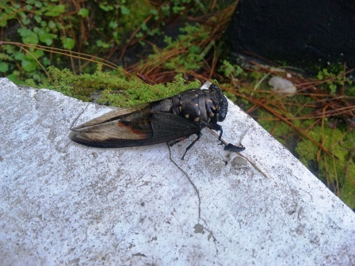

朝食を食べに出かけた時に見つけたセミとかたつむり。どちらも日本のものとは少し違う。
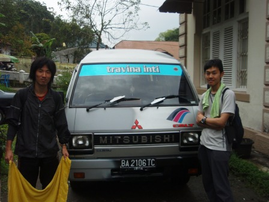
朝はガイドさんに宿まで迎えに来てもらった。

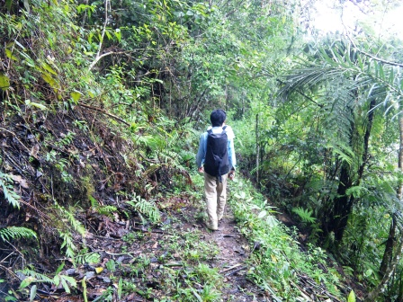
トレッキングスタート！トレッキングの舞台となるのは、ブキティンギ近郊のガライ・シアノッ渓谷。スマトラのグランドキャニオンと呼ばれている場所である。開始点には特に道標などはなく、踏み跡を頼りに渓谷の底へと降りていく。ガイドさんは英語が堪能で、植物などジャングルのことをいろいろ説明しながら歩いてくれる親切な方だった。
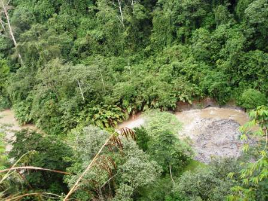
うっそうと茂る木々の間を縫って谷底へと降りていくと、やがて茶色に濁った川が見えてきた。相当流れは速いようだ。


熱帯雨林を構成するのは主に背の高い広葉樹だが、わずかに日光が届く地面付近にも小さな植物たちが生きていた。

谷底へ降りてみると、困ったことにいつもの道が川に流されてしまったようだった。
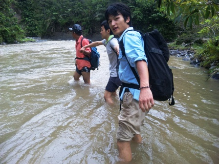
そこで僕たちは、数珠つなぎになって川を横切ることにした。もっと緩いトレッキングだと思っていたのに、開始早々こんなことをするとは超驚きだ！

川を横切ってすぐ僕たちを出迎えてくれたのは、世界最大の花、ラフレシアだった。事前にガイドさんから3日前に枯れてしまったと聞いていたのでびっくりだった。確かにこの花の横には真っ黒になってしまった残骸があった。枯れるというよりは、腐ってしまったという感じだ。

花の内部はトゲトゲしていてちょっとグロテスク。

人と比べてもこのでかさ！！
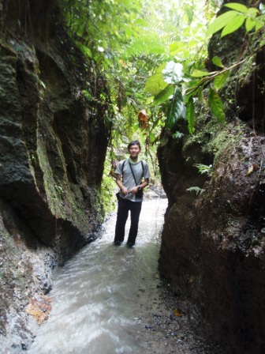
道標のない道を進んでいき、横切るのかと思った沢を登っていく。本当にワイルドなトレッキングだ。そして、日本の沢でもよく出没するヒルが出た！

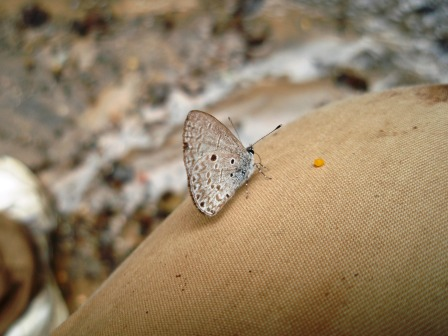
沢のほとりで小休止。日本にもいそうな蝶々がいた。


渓谷の底から今度は登りが始まった。斜面で小休止の最中、ガイドさんがこの木はシナモンだよと言って、ナイフを取り出すと木の皮を切り取り始めた。皮の断片をもらい、においを嗅ぐと確かにシナモンそのものだった。シナモンがこのような木から作られているのは知らなかった。
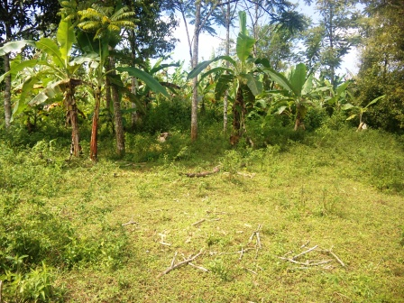
斜面を登りきると、バナナ畑が広がっていた。ここはもう人の生活圏内だ。

天気がいいのでとてものどか。
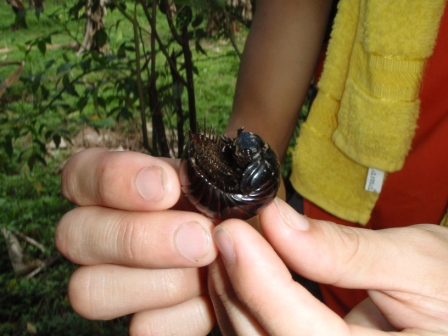
親指大ほどもあるダンゴムシにも遭遇した。

幹にプランとなっているのはパパイヤ。
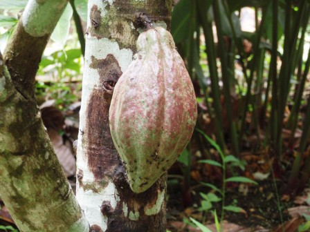
カカオも幹からニョキっと出ている。

この緑の実はアボガド。

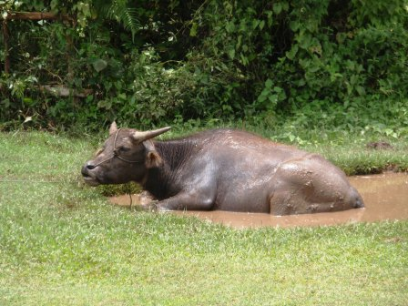
売店で小休止。目の前の広場では水牛が水浴びをしていた。
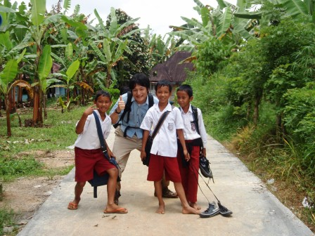
外国人は珍しいのか、子供たちは笑いながら後をつけてきた。女の子は恥ずかしいのか、カメラを向けるとキャーッと大声を出して逃げて行ってしまう。
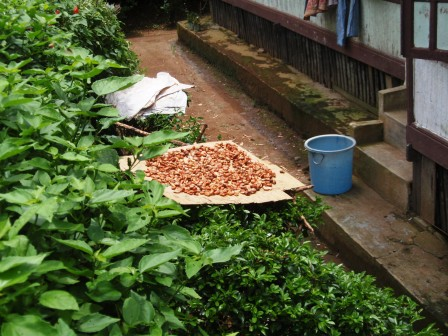
民家の軒先にはカカオの実をむいたものが干してあった。

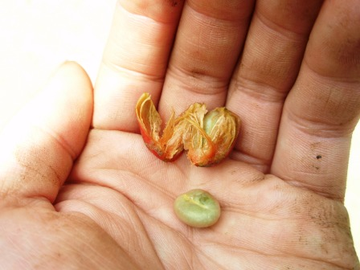
赤や緑の実。これはコーヒーの豆である。むいてみると、確かにコーヒー豆の形をしていた。炒っていないと緑色なのだ。
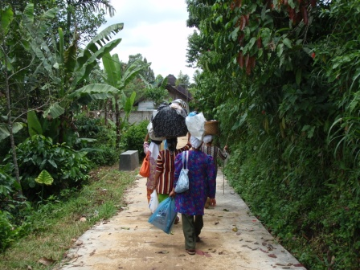
女性たちは頭に荷物をのせ、器用にバランスをとりながら運んでいた。
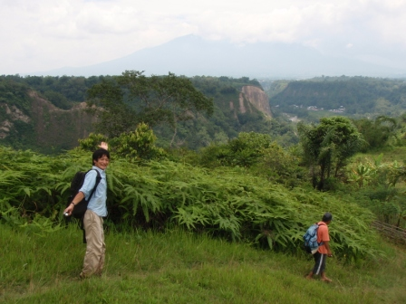
これが僕たちが谷底を歩いてきたガライ・シアノッ渓谷だ。

遠くにシンガラン山を望みつつ、舗装路を進んでいく。

やがて道は再び未舗装路に変わり、つづら折りの坂道を下っていくと下の方から鞭で尻をピシピシと叩かれながら水牛が上がってきた。
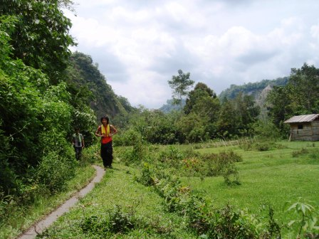
再び谷底に降りると、人しか通れないような小道になった。しかし、実際はバイクが何台も行きかっていた。


ひときわ目立つ奇岩が見える河原でランチタイム。このバナナの葉に包まれたナシチャンプルーはガイドさんの奥さんの手作り。

河原にあったオジギソウ。
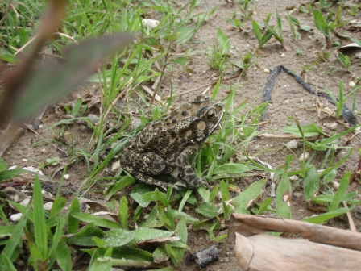
河原にいたイボガエル。

河原にいた山羊たち。
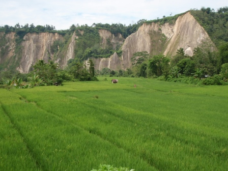
渓谷に広がる田園。スマトラでは三期作が行われている地域もあるらしい。日本と違ってあっちの田んぼは田植えの直後、こっちの田植はもう収穫なんて風景が当たり前に見られた。
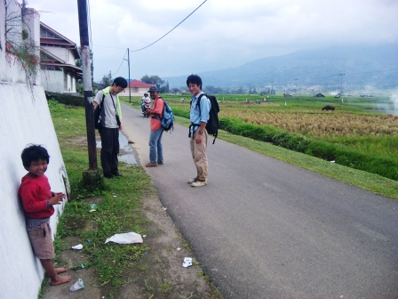
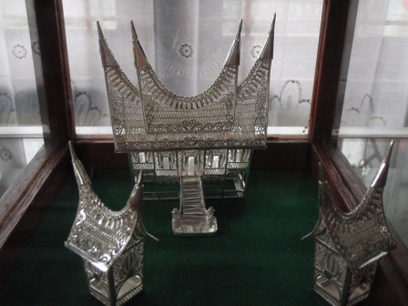
渓谷から離れ、銀細工で有名なコタガドゥンの町を歩く。
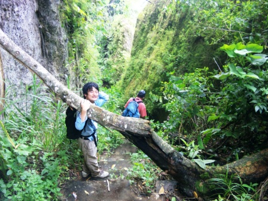
再び渓谷を横切って帰ろうとしたが、道が崩壊していて通行不能状態になっていた。仕方なく、乗り合いタクシーを捕まえて帰ることに。

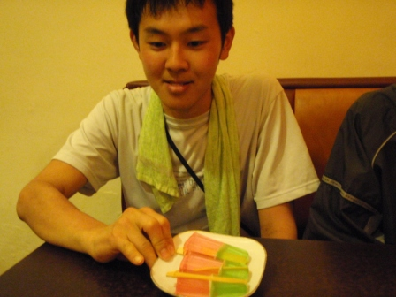
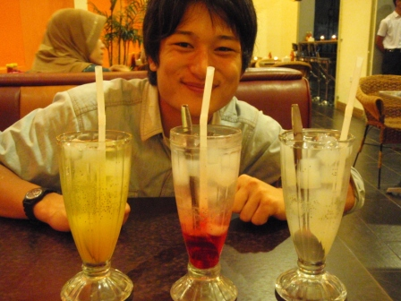

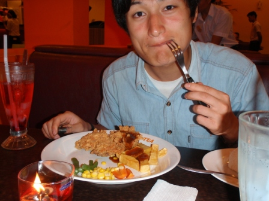
朝から夕方まで歩き通しで少し疲れた。夕飯は少ししゃれたレストランに行った。ここは見た目の割にはステーキセットが３００円程度というリーズナブルさがうれしいお店。おしゃれなツブツブ入りジュースがあったり、つきだしに無料のゼリーバーが出てきたりと日本にあってもはやりそうな店だった。
翌日へ